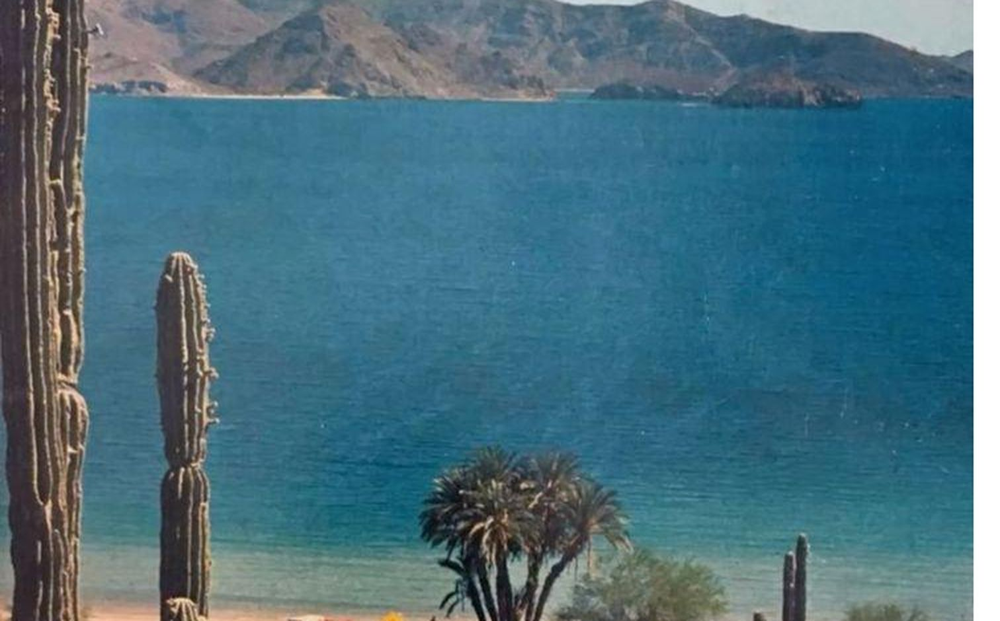
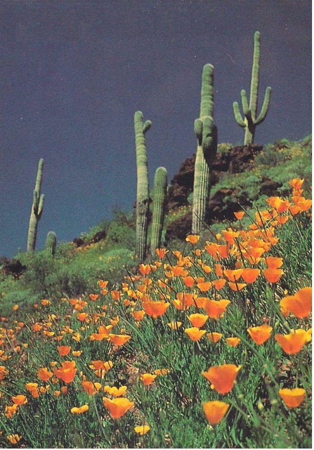
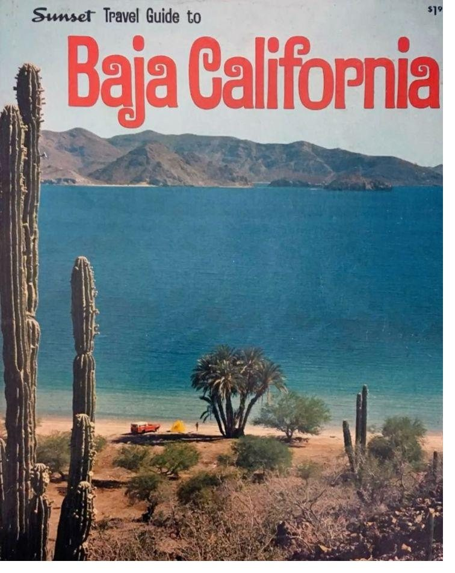
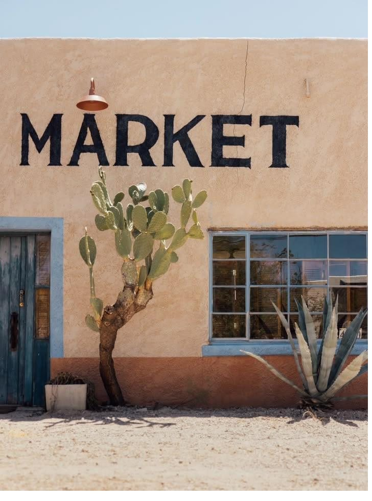
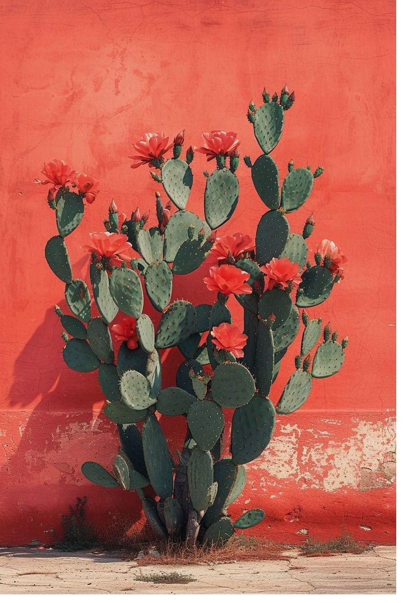

Baja is the muse. Casa Damiana is what happens when you let it in.
El brief de Casa Damiana pide mucho más que un lanzamiento. Pide que el hotel exista para el huésped correcto antes de que empiece la temporada que sostiene el año.
Demanda desde cero
Sin base de datos, con la reputación digital por reconstruir y el canal directo en 0%, las primeras reservas dependen de terceros. Construir canal propio es la primera meta, no la última.
Lanzar cuando casi nadie compra
De mayo a agosto es la ventana débil del año. Gastar fuerte en pauta ahí probablemente sea pagar caro por poca intención. La ventana sirve para otra cosa: juntar audiencia, prensa, trade y contenido para que octubre arranque con demanda ya caliente.
Un nombre con varios significados
Damiana es una planta, un licor de la región y ahora un hotel. Para Google y para los motores de IA eso es ambigüedad. Hay que enseñarles qué es Casa Damiana antes de que lo adivinen. Hipótesis que validamos con datos de búsqueda.
Un lujo que no grita
Quien paga por discreción no responde a un anuncio estridente. El mismo mensaje tiene que viajar por prensa, recomendación y búsqueda, no solo por impresiones.
Este es el territorio que ya ocupa cualquier hotel de la península. Se puede firmar con cualquier logo.
Describen el paisaje desde afuera. El huésped lo lee, lo reconoce y lo olvida.
Baja deja de ser el tema y se vuelve la fuerza que decide cómo se siente la casa. Nada se imita, nada se decora, nada se recrea.

Baja is the muse. Casa Damiana is what happens when you let it in. Cuando dejas entrar Baja, la casa parece pertenecer al lugar.
The Baja Muse no es un lema. Es el criterio con el que se decide la arquitectura, el contenido, el servicio y la manera de contar la propiedad.




Referencias de feeling: luz baja, escala, color quemado y materia real. La fotografía final será de la propia Baja.
Ejemplos de voz para conversar con ustedes, no copy final. Editorial, sensual e inteligente; nunca copy de resort.
Fotografía, arquitectura, luz, paisaje y momentos que hacen que alguien quiera detenerse.
Diseño, materiales, proporción y las decisiones detrás de la relación de la casa con el territorio.
Cómo se vive la casa: despertar, desayuno, piscina, golf, pueblo, excursión y regreso.
Huéspedes reales, creators, recomendaciones y reseñas. Alimenta redes, pauta y sitio a la vez.
San José del Cabo, rutas, gastronomía, desierto, mar y cultura local.
Lo que pasa después del viaje: recomendaciones, novedades, regreso, referral y CRM.
Hacemos que el huésped correcto descubra Casa Damiana: prensa de arquitectura, creators y contenido de luz y espacio.
Demostramos que no vendemos un resort genérico: sitio editorial, reseñas, comparativos y retargeting que resuelven si vale lo que cuesta.
Reservar se vuelve entrar en esa experiencia. Oferta directa clara, motor de reservas, WhatsApp y tarifa para mayoristas.
El viaje continúa después del check-out: email, WhatsApp, reseñas y recomendación. El huésped de hoy es la base de datos de la próxima temporada.
La base de datos arranca en cero. Por eso, desde el primer día, cada interacción debe dejar un contacto que el hotel sea dueño de volver a usar.
Orgánico
- Instagram y Stories
- Reels de espacios y luz
- Pinterest y TikTok, a prueba
Ganado
- PR de arquitectura y viajes
- Creators de 5k a 50k seguidores
- Reseñas y recomendación
Propio
- Sitio y motor de reservas
- Email y WhatsApp
- CRM
Pagado
- Google: marca y destino
- Meta: prospecting y retargeting
- Pinterest, si se valida
Cada canal entra por el papel que juega en el funnel, no porque esté de moda. Lo que no está probado se prueba en pequeño antes de escalar.
SEO por intención
Contenido para búsquedas de destino y de comparación, no para llenar un blog. Arquitectura, luz, parejas y celebraciones como ejes editoriales.
GEO: que la IA lo describa bien
Una definición clara de qué es Casa Damiana, datos estructurados, reseñas y menciones consistentes, para que los motores generativos puedan recomendarla con precisión. Antes de apostar presupuesto, verificamos cómo se comporta cada motor hoy.
Directo, por diseño
La meta de 15%+ de ingreso directo no llega sola. Se diseña con una oferta propia clara, captura de contacto y seguimiento en cada paso.
Audit competitivo, validación del nombre en búsqueda, analítica y tracking, arquitectura del funnel, base GEO y audiencias semilla.
Captación de contactos antes del lanzamiento, contenido editorial, primeros creators, relación con prensa y trade, pruebas del sitio.
Sitio en vivo, comunicado y outreach, activación de Instagram y Stories, primeras reseñas y pauta de prueba en pequeño.
La pauta sube con la señal de demanda. CRM de bienvenida, refuerzo de Google de marca y primer corte serio de datos.
El presupuesto se reasigna por retorno marginal. Cada mes cerramos con qué dejar de hacer, qué empezar y qué escalar.
No sabemos todavía con cuánta anticipación reserva el huésped objetivo. Con los datos de Park Royal decidimos qué tan pronto conviene subir la pauta antes de octubre.
Cada prueba tiene hipótesis, variable, métrica y regla de decisión definidas antes de lanzarse.
El mínimo indispensable para operar este sistema es $75,000 MXN al mes. Ninguna línea baja de su mínimo; puedes subir las que quieras y ver cómo cambia el total.
← Arrastra cada círculo para ajustar el presupuesto de esa línea →
Ocupación, no publicaciones
Cada acción se conecta con RevPAR, ADR, canal directo y reputación. Si no mueve uno de los cuatro, la cuestionamos.
Creatividad con tensión
Evitamos el lujo genérico. The Baja Muse es una idea que gobierna la marca de punta a punta y vive al mismo tiempo en redes, prensa, creators y CRM.
Honestidad antes que halago
Les diremos si una idea no funciona, si un KPI está mal elegido o si algo no alcanza. Esta propuesta ya empieza así: el alcance y el presupuesto tienen límites.
LET BAJA IN.
Y si queremos que la gente descubra algo que parece haber existido siempre, primero tenemos que conseguir que lo encuentre.
Groud no vende marketing, lo construye.